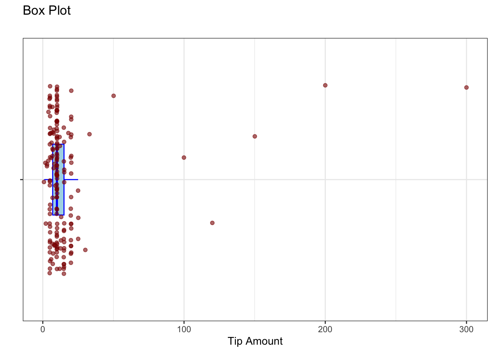
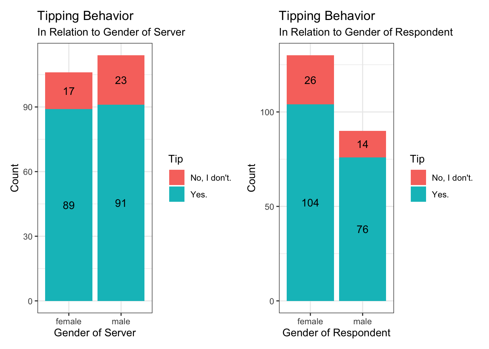
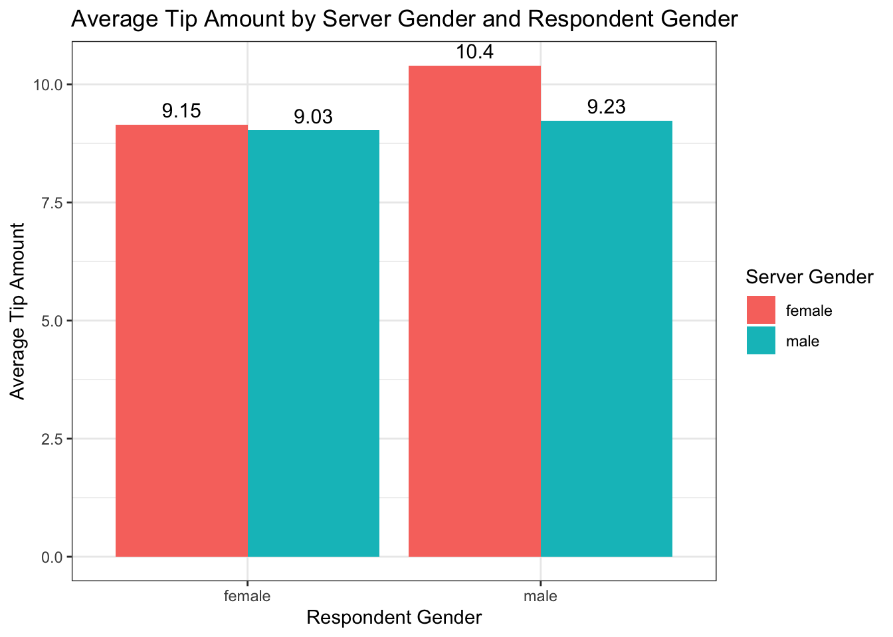
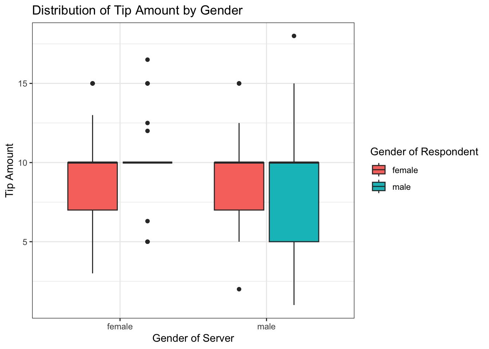

How does gender influence tipping behavior in restaurant settings? DACSS 602 (Fall 2024)
Author
Sangam Patil
Introduction
Our experiment aims to investigate gender bias in tipping culture. Tipping in restaurants has become a point of contention, especially with state level elections proposing to abolish tips and implement minimum wage. We want to use a survey experiment to explore underlying reasons for low or high gratuity.
Methodology
We implemented a 2x2 factorial design to examine the effect of the server’s gender on gratuity (tip amount). Participants were randomly assigned to view a photo of either a male or female server and presented with an identical dining scenario where the server makes a small mistake. This design ensures randomization across treatment groups, minimizing bias and establishing causal relationships. The treatment variable is the server’s gender, coded as a dummy variable: 1 represents a male server, and 2 represents a female server. The outcome variable is the amount of gratuity (tip) participants report they would provide in response to the dining scenario. The total sample size for this experiment is 220 participants, ensuring sufficient statistical power to detect potential differences in gratuity across the treatment groups. This experiment allows us to test whether the server’s gender influences the tipping behavior of participants, providing insights into potential biases or gender-based perceptions in service-related contexts.
Analysis
We used a t-test for this analysis because our independent variable (server gender) is binary (male or female), and our dependent variable (gratuity amount) is numeric. The t-test is appropriate for comparing the means of two groups to determine whether there is a statistically significant difference between them. In this case, the test allows us to evaluate whether the gender of the server influences the gratuity amount provided by participants. This approach helps identify any potential correlation or causal relationship between the server’s gender and tipping behavior.
library(tidyverse)
── Attaching core tidyverse packages ──────────────────────── tidyverse 2.0.0 ──
✔ dplyr 1.1.4 ✔ readr 2.1.5
✔ forcats 1.0.0 ✔ stringr 1.5.1
✔ ggplot2 3.5.1 ✔ tibble 3.2.1
✔ lubridate 1.9.3 ✔ tidyr 1.3.1
✔ purrr 1.0.2
── Conflicts ────────────────────────────────────────── tidyverse_conflicts() ──
✖ dplyr::filter() masks stats::filter()
✖ dplyr::lag() masks stats::lag()
ℹ Use the conflicted package (<http://conflicted.r-lib.org/>) to force all conflicts to become errors
New names:
Rows: 220 Columns: 16
── Column specification
──────────────────────────────────────────────────────── Delimiter: "," chr
(5): IV, g4q1, g4q3, zip, g5sd1 dbl (11): ...1, id, g4q2, age, gender, hhi,
ethnicity, hispanic, education, ...
ℹ Use `spec()` to retrieve the full column specification for this data. ℹ
Specify the column types or set `show_col_types = FALSE` to quiet this message.
• `` -> `...1`
head(data)
# A tibble: 6 × 16
...1 id IV g4q1 g4q2 g4q3 age gender hhi ethnicity hispanic
<dbl> <dbl> <chr> <chr> <dbl> <chr> <dbl> <dbl> <dbl> <dbl> <dbl>
1 1 1 male No, I do… NA None 38 1 1 1 1
2 2 2 male Yes. 2 No 67 2 1 2 1
3 3 3 male Yes. 20 Beca… 29 1 4 15 2
4 4 4 female Yes. 25 I do… 45 2 4 1 14
5 5 5 female No, I do… NA I ti… 56 2 1 2 1
6 6 6 male Yes. 20 I al… 31 1 17 1 1
# ℹ 5 more variables: education <dbl>, political_party <dbl>, region <dbl>,
# zip <chr>, g5sd1 <chr>
ggplot(filter(data, !is.na(g4q2)), aes(x = g4q2, y ="")) +geom_boxplot(outlier.shape =NA, width =0.3, color ="blue", fill ="lightblue") +geom_jitter(width =0.2, size =1.5, alpha =0.6, color ="darkred") +labs(title ="Box Plot",y ="",x ="Tip Amount",subtitle ="") +theme_bw() +scale_color_viridis_d()

This graph is a box plot combined with jittered points, visualizing the distribution of “Tip Amount” data. The blue box plot, filled with light blue, represents the interquartile range (IQR) and highlights the median, while the jittered dark red points show individual data points with slight horizontal displacement to avoid overlap. The majority of tip amounts are clustered between 0 to 25, with a few extreme outliers extending beyond 50, 100, 200, and 300.
# Here, we removed the outliers and converted percentage into amount(Dollars).new_data <-mutate(data, g4q2 =case_when(g4q2 >49~NA, g4q2 ==20~10, g4q2 ==25~12.5, g4q2 ==30~15, g4q2 ==33~16.5,.default = g4q2))
# Label Encoding to gender variablr of server i.e. IV new_data <-mutate(new_data, IV2 =if_else(IV =="male", 1, 2, NA))new_data <-mutate(new_data, gender2 =if_else(gender ==1, "male", "female", NA))
# t-test - Tip amount and Gender of servert.test(g4q2 ~ IV2, data = new_data, var.equal =TRUE)
Two Sample t-test
data: g4q2 by IV2
t = -0.97045, df = 172, p-value = 0.3332
alternative hypothesis: true difference in means between group 1 and group 2 is not equal to 0
95 percent confidence interval:
-1.4561001 0.4962323
sample estimates:
mean in group 1 mean in group 2
9.123596 9.603529
# t-test - Tip amount and Gender of respondentt.test(g4q2 ~ gender, data = new_data, var.equal =TRUE)
Two Sample t-test
data: g4q2 by gender
t = 1.278, df = 172, p-value = 0.203
alternative hypothesis: true difference in means between group 1 and group 2 is not equal to 0
95 percent confidence interval:
-0.3485741 1.6289662
sample estimates:
mean in group 1 mean in group 2
9.733333 9.093137
# A tibble: 2 × 2
IV Average
<chr> <dbl>
1 female 9.60
2 male 9.12
Results
The results of the t-test led us to draw the conclusion that any potential existence of gender bias in tipping behaviors is not prevalent enough to be of note. The p-value obtained was far too large to be statistically significant in any context. 1. T-test for IV on g4q2 • Test Type: Two-sample t-test assuming equal variance (var.equal = TRUE). • Null Hypothesis (H₀): There is no difference in means between the two IV groups. • Alternative Hypothesis (H₁): There is a significant difference in means between the two IV groups.
Results Summary: • t-value = -0.97045 • Degrees of freedom (df) = 172 • p-value = 0.3332 • 95% Confidence Interval = [-1.4561, 0.4963] • Sample Estimates: • Mean in group 1 = 9.12 • Mean in group 2 = 9.60
plot1 <-ggplot(filter(new_data, !is.na(IV),!is.na(g4q1)),aes(x = IV, fill = g4q1)) +geom_bar() +labs(x ="Gender of Server", y ="Count", fill ="Tip", title ="Tipping Behavior", subtitle ="In Relation to Gender of Server") +scale_color_viridis_d() +theme_bw() +geom_text(stat ="count", aes(label =after_stat(count)), position =position_stack(vjust =0.5))plot2 <-ggplot(filter(new_data, !is.na(gender2),!is.na(g4q1)),aes(x = gender2, fill = g4q1)) +geom_bar() +labs(x ="Gender of Respondent", y ="Count", fill ="Tip", title ="Tipping Behavior", subtitle ="In Relation to Gender of Respondent") +scale_color_viridis_d() +theme_bw() +geom_text(stat ="count", aes(label =after_stat(count)), position =position_stack(vjust =0.5))combined_plot <- plot1 + plot2combined_plot

This graph presents the results of a survey on tipping behavior in relation to the gender of both the server and the respondent. The left panel focuses on the gender of the server. It shows that when the server is female, 89 respondents tipped, while 17 did not. Conversely, when the server is male, 91 respondents tipped, and 23 did not. This suggests that tipping behavior is not significantly influenced by the server’s gender. The right panel examines the gender of the respondent. Here, we see that 104 female respondents tipped, while 26 did not. Among male respondents, 76 tipped, and 14 did not. This indicates that female respondents are more likely to tip than male respondents. In conclusion, the graph reveals that while the gender of the server does not seem to impact tipping behavior, the gender of the respondent does play a role, with females being more likely to tip than males.
`summarise()` has grouped output by 'IV'. You can override using the `.groups`
argument.
ggplot(summary_data, aes(x = gender2, y = Mean_Tip, fill = IV)) +geom_bar(stat ="identity", position ="dodge") +geom_text(aes(label =round(Mean_Tip, 2)), position =position_dodge(width =0.9), vjust =-0.5, size =4) +labs(title ="Average Tip Amount by Server Gender and Respondent Gender",x ="Respondent Gender",y ="Average Tip Amount",fill ="Server Gender") +theme_bw()

This bar chart visualizes the average tip amount as a function of both the server’s gender and the respondent’s gender. The chart reveals that when the server is female, regardless of the respondent’s gender, the average tip amount is higher. Specifically, the average tip amount is $9.15 when the respondent is female and $10.40 when the respondent is male. On the other hand, when the server is male, the average tip amount is $9.03 for female respondents and $9.23 for male respondents. This suggests that female servers tend to receive higher tips compared to male servers, and this difference is more pronounced when the respondent is male.
Findings
As a result of the t-test, the null hypothesis was not rejected, and it is uncertain whether or not there is a gender bias that exists in tipping culture based on the gender of the server and the amount that they are tipped. With a p-value of 0.3332 and a 95% confidence interval of (-1.4561, 0.4962323), it is more than evident that more research needs to be done in order to find the biases that exist in the serving world.
ggplot(new_data, aes(x =as.factor(IV), y = g4q2, fill =as.factor(gender2))) +geom_boxplot() +labs(title ="Distribution of Tip Amount by Gender",x ="Gender of Server", y ="Tip Amount",fill ="Gender of Respondent") +theme_bw() +scale_color_viridis_d()
Warning: Removed 46 rows containing non-finite outside the scale range
(`stat_boxplot()`).

The plot reveals several key insights, when the server is female, the median tip amount is generally higher compared to when the server is male. This is evident from the position of the median lines within the boxes. There is a noticeable difference in tipping behavior between male and female respondents. Female respondents tend to tip more generously, as indicated by the higher median and overall distribution of tip amounts in the boxes associated with female respondents. The plot also highlights some outlier tip amounts, represented by individual data points outside the whiskers. These outliers suggest that there are instances of unusually high or low tips, which might be due to various factors such as exceptional service, dissatisfaction, or other specific circumstances. Overall, this box plot provides a clear visual representation of how the gender of both the server and the respondent influences tipping behavior, with female servers typically receiving higher tips and female respondents being more generous tippers.
Discussion
While our hypothesis was incorrect, our foray into this data yielded a lot of questions that would be worth exploring further. We were particularly interested in seeing how the gender of the customer was a factor into the tipping amount. What we found, just by simply glancing at the dataset, was that female customers were more likely to tip out of obligation, whereas male customers tended to be more scrutinizing. We believe this could set a foundation for another experiment worth investigating.